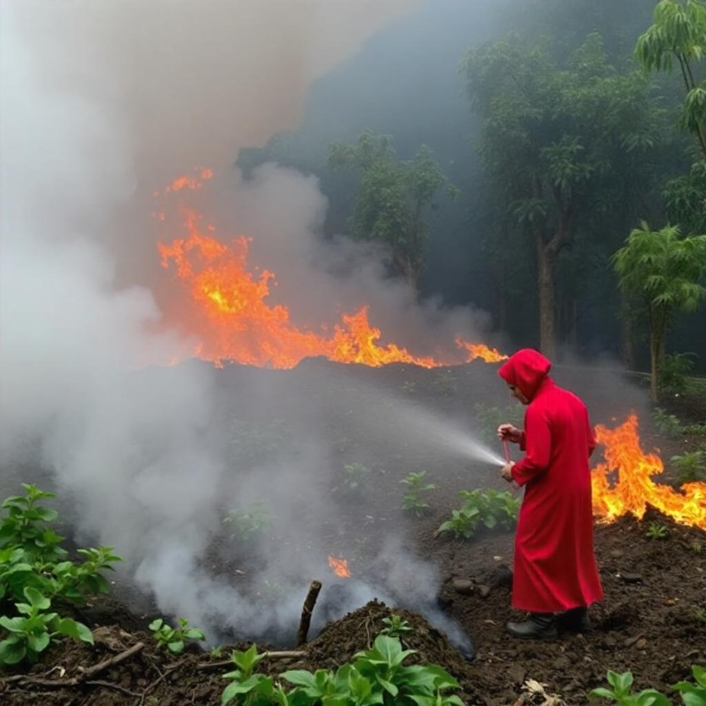
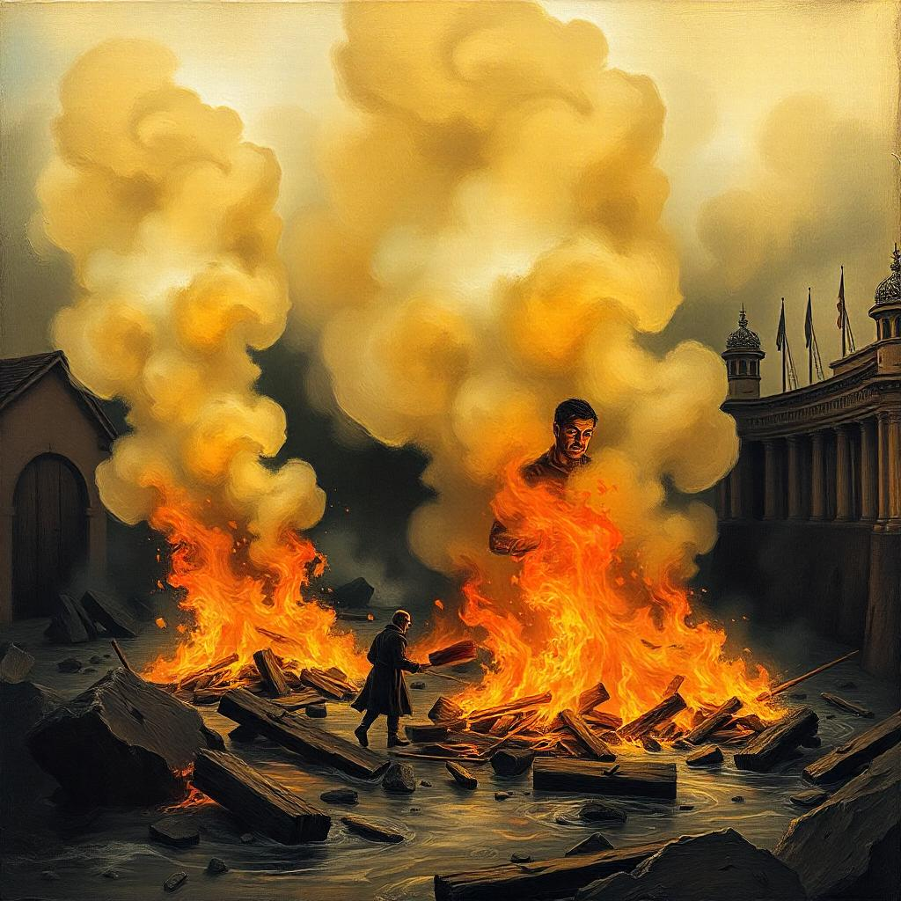
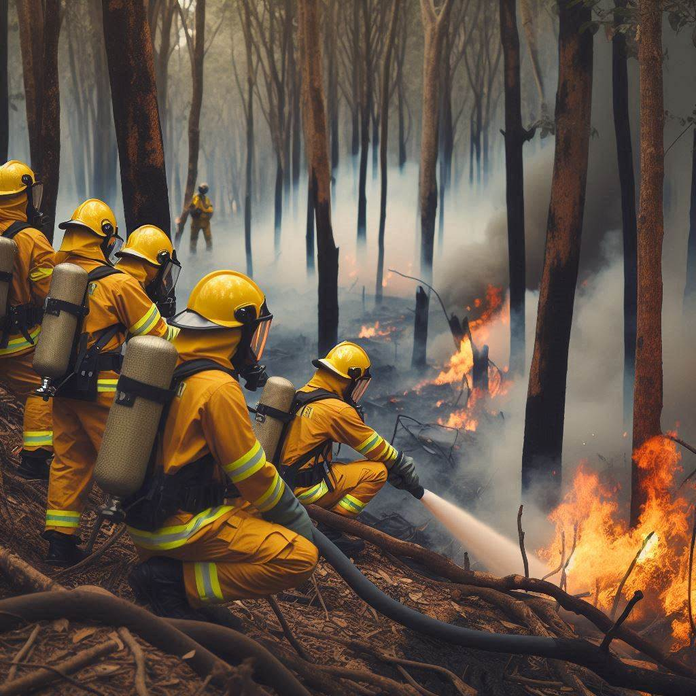

Principais Causas
- Atividades Agrícolas: Queimadas controladas são frequentemente usadas para limpar terrenos e preparar o solo para novas plantações.
- Desmatamento: A remoção de vegetação para dar lugar a pastagens ou áreas urbanas é uma das principais causas de queimadas, especialmente em regiões como a Amazônia.
- Negligência Humana: Lixo jogado em áreas florestais ou fogueiras não apagadas corretamente podem causar incêndios acidentais.
- Mudanças Climáticas: Secas e temperaturas elevadas, que estão se tornando mais frequentes devido às mudanças climáticas, aumentam a probabilidade de incêndios florestais.


